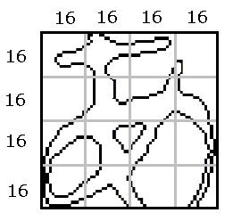
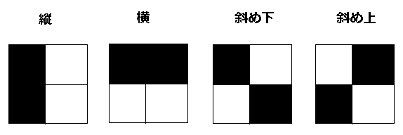

文字認識 方向線素特徴量
方向線素特徴量が文字認識でかなり使われている方法のようで。
文字認識に使われる特徴量に方向線素特徴量というものがある。これは文字の線が縦，横，斜め上，斜め下の４方向のどの方向であるかを調べる方法である。例えば、下図のように64×64ドットの画像を16×16 ドットのマス目に分けて，それを8 ドットずつずらしながら，その16×16の領域内にある方向線素の数を調べる。この方法で調べると，7×7の領域を調べることになり，その領域で4方向の線素の数を調べるので，7×7×4の196次元の特徴量を抽出することになる。

補足として、方向線素の数を調べるとは2×2ドットの領域のドットの形から判断する。以下が例。
４ドットがすべて黒の場合は全ての方向を持つとする（でいいのかな）。この各方向の数をカウントすればよい。

結果的に特徴量として、領域ごとに以下のような196次元のベクトルが取得できる。
[ 縦の数 横の数 斜下の数 斜上の数 縦の数 横の数 斜下の数 斜上の数・・・・]